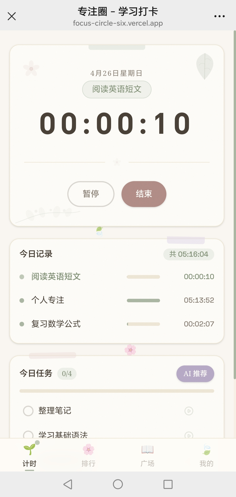
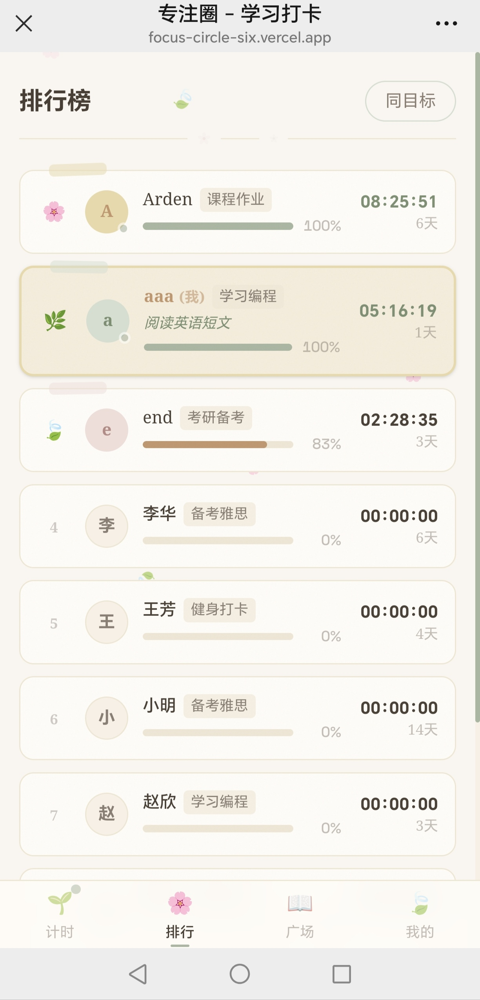
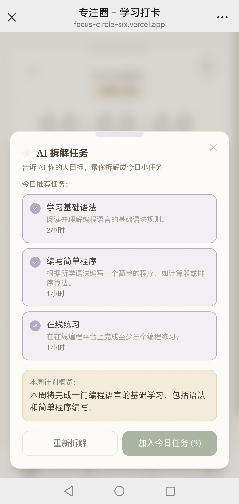
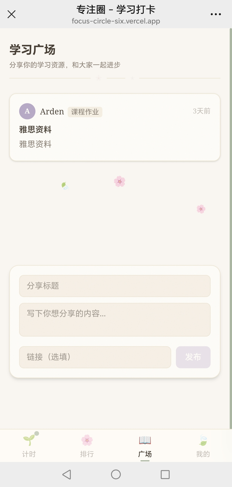
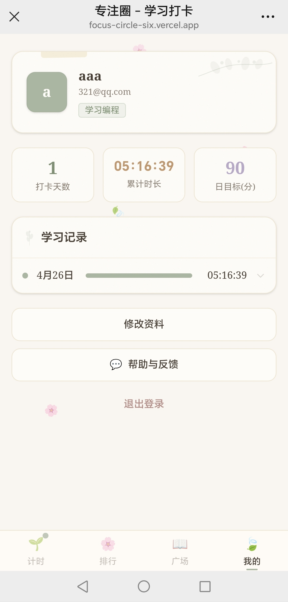
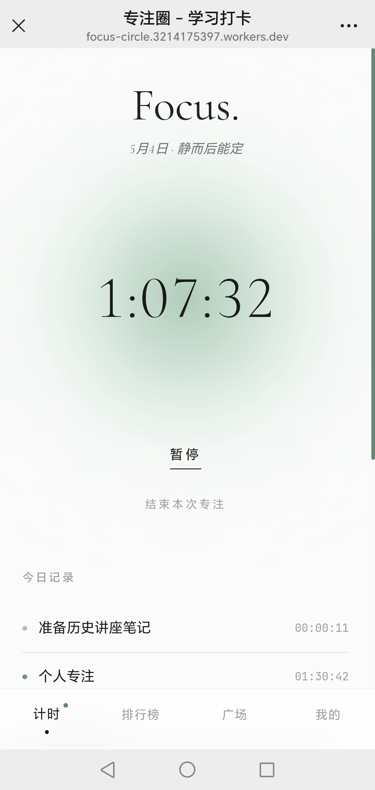
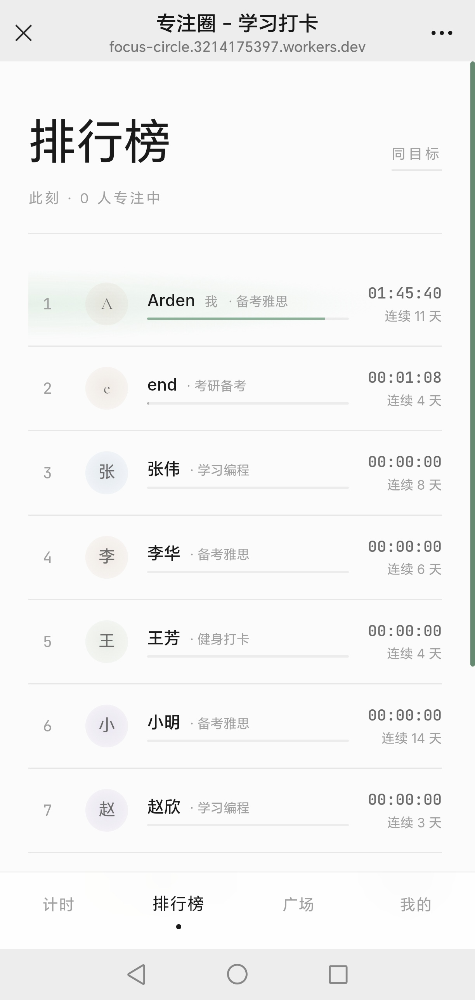
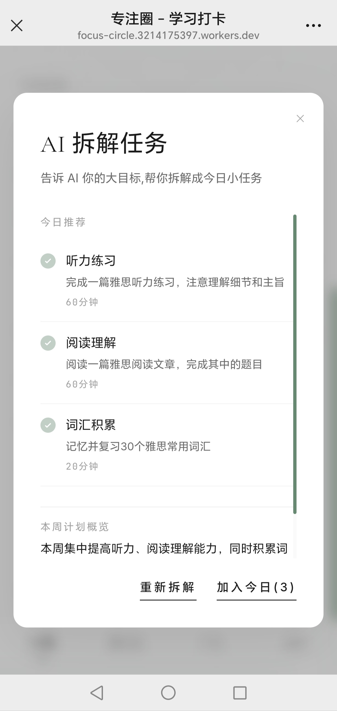
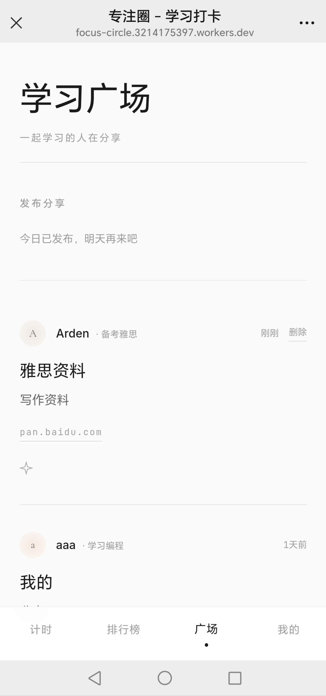
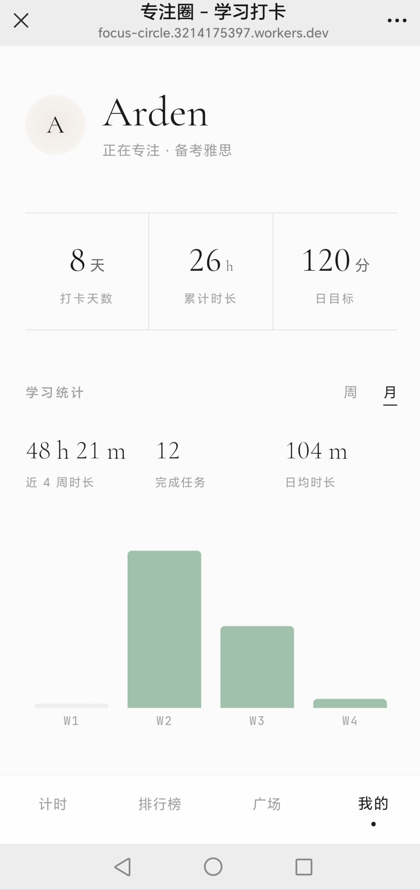

正向计时、跨设备实时同步、AI 任务拆解。
用一颗呼吸的光球记录真实的投入，让专注本身成为奖励。
无压力的正计时模式，支持暂停 / 继续 / 跨设备实时同步。任务关联后时长自动累加到对应条目，完成页以暖金光晕收尾。
按当日专注时长排名，"此刻 X 人专注中"实时显示。支持「同目标」筛选，他人的进度即此刻的鼓励。
社区资源板块，可发布学习笔记和资料链接。每日限发一条以保持质量，支持鼓励互动。
接入智谱 GLM 大模型，根据用户的学习目标智能生成每日小任务，可一键加入今日清单。





柔和草本绿 + 米色纸张为主色，分块卡片承载内容，强调"手账感"与陪伴氛围。 适合学习社群初期 — 信息密度低，节日感强。





把"计时器"从一个功能升格为情绪锚点。中央光球随状态切换主色 — 专注绿 / 暂停紫 / 完成暖金 — 并以 7 秒呼吸节奏轻微缩放；衬线大字 与等宽数字配合，留白拉到最大。去掉所有装饰图形，让用户只看见 "时间在流动"。
以 active_timers 表为唯一真相来源，配合 Realtime 订阅实现多端状态一致， 解决了浏览器标签页切换导致的计时漂移。
检测超过 12 小时的遗忘计时器，提供保存（上限 12h）/ 丢弃 / 继续三种 恢复策略，避免异常数据污染排行榜。
网络异常时 session 自动存入 localStorage 队列，恢复连接后批量补传。 PWA 支持离线访问与桌面安装。
后端 API 路由接入智谱 GLM，根据学习目标生成结构化每日任务， 一键加入今日清单。